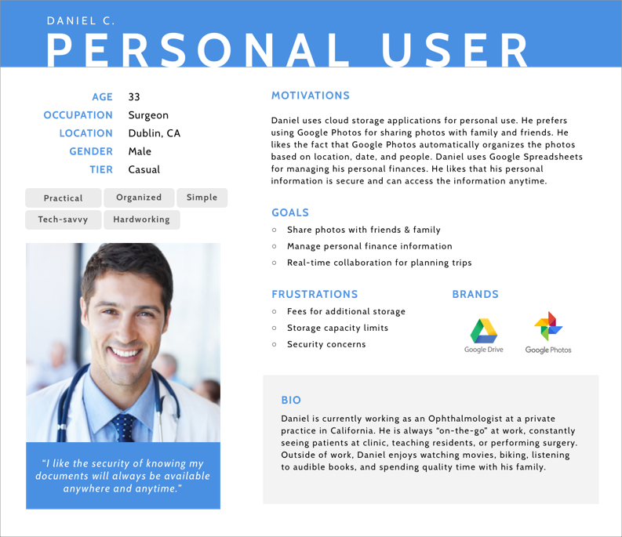
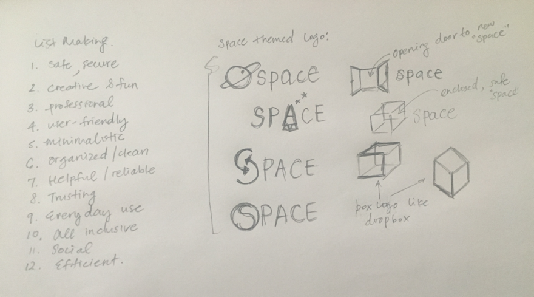
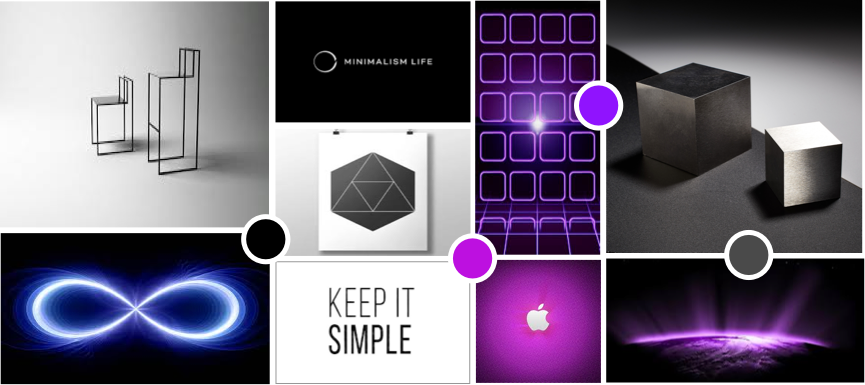
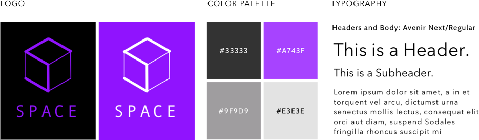

My client believes that the cloud storage market is still young and that there is room for another player. I was to design a new cloud storage application that not only exhibits the the basic cloud storage features, but also has special features that allow users to share content with friends, family, and co-workers. They wanted to introduce a product that is unique from other current applications.
Space is a user-friendly cloud storage application for both business and personal users. It allows users to save, create, upload, share, and collaborate in one simple interface. With Space, users have secure access to their files anytime, anywhere, and with any device.
When it comes to creating a great product, it’s all about the users. I created a user survey to better understand my potential users and their opinions on cloud storage applications. The goal of the survey was to find out the following:
To find out how Space can stand out from existing competition, I performed a competitive analysis on the following potential competitors below. I used this knowledge to find out how Space can effectively position itself amongst big powerhouse companies and smaller dedicated companies.
Analyzing the results obtained from the user survey and competitive analysis, gave me a clearer vision for Space.
I decided on a target audience:
“Cloud storage made for everyone.” Space will target both personal and business users. Personal users use cloud storage apps for personal reasons such as sharing photos or working on a school assignment. Business users are working professionals and companies.
I came up with special features Space will have for product differentiation:
I interviewed two individuals, a personal and business user. They both use cloud storage apps, but for different reasons and in different ways. Interviewing them helped me design a flexible product, one that can appeal to both types of users.
Creating user stories helped me clearly document what our cloud storage app will do. What features do we absolutely need and would like to have? To keep this user story organized, I performed the following:
Using the user stories as a reference, I created user flows. User flows helped me map out seamless user experiences for my design. Using Draw.io, I created the user onboarding process and user flows for the main types of user tasks: Uploading & Creating Content, Organizing Content, and Collaboration.
Once I started placing elements on a wireframe, I began to understand how they interact. Using Axure RP, I was able to create a clear layout with all the necessary elements included and located things that do not make sense.
I conducted my first round of user test soon after I finalized my wireframes. Testing wireframes was an important step, which allows users to focus just on the functionality of the app and not visuals. Users noted the following comments.
"I recommend having an option to sign up via social media account. Almost all applications have this feature nowadays."
"I’m confused on what 'Create a New Category' does."
"The 'Create New Folder' under 'Organize' button appears to be repetitive as we can also create a folder under 'New' button."
"It is better to view everything with one simple click, instead of having to click a couple more times to get to the file type I want."
On to branding & identity. What emotions and characteristics do I want to portray to this brand? What story do I want to tell my users? To answer these questions, I did a little brainstorming and sketching to generate some ideas quickly:
To have users perceive Space as a professional, user-friendly, secure, and reliable product, I needed to create the perfect brand. I assembled a moodboard to gather some inspiration and to create a brand vibe:
I created the name called “Space”, which represents a secure cloud storage space for all users with infinite and endless possibilities. I was also inspired by simple, yet impactful company names. From my sketches and moodboards, I chose a cube logo design and explored other versions:
The final company logo is a cube design with an emphasis to the “S” letter. I chose this logo as it best embodies impressions of simplicity, professionalism, and modernism. With the right combination of color, typography, hierarchy, and size, I created the Space brand.
I was able to apply my branding concepts to my wireframes to create high fidelity mockups and prototype. By creating design mockups, I was able to apply every detail into my product. Details included elements such as headlines sizes, button styles, background images, and patterns.
After finalizing my high-fidelity mockups and prototype, I began round two of the user test. Users were able to focus on the visuals. They noted the following comments.
"I like the use of purple accents throughout the site. It is well integrated in buttons, logo, and side bars. Overall, site is clean and organized."
"The colors are all easy on the eyes and not too flashy, but bold and makes a statement."
"The space-related icon patterns look childish. The patterns are clashing with your brand, which is suppose to be more modern and professional."
To make specific design decisions, I created preference tests to quickly capture users' opinions. Conducting preference tests was a valuable step, which allowed me to prioritize user opinions over my personal preference. It made it easier for me to arrive at a choice with confidence.
Which Design Do You Prefer?
"The photo has a more collaborative feel with three people working together."
"Simple, modern, shows collaboration. The other design has too much purple accents."
"Simple, clean, and color contrast looks best."
Users noted design flaws, confusions, frustrations, and redundant concepts in my designs. These user feedbacks were extremely valuable information and it gave me the chance to improve my product for the final prototype.
View PrototypeSpace was my first design project and it was an incredible learning experience for me. Here are my key takeaways: